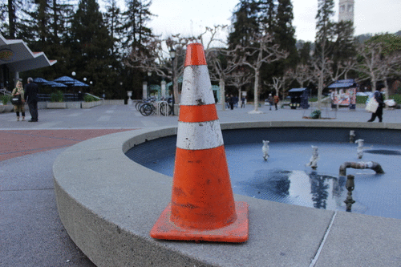
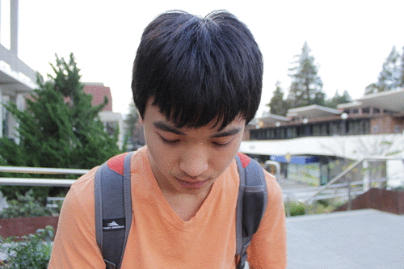
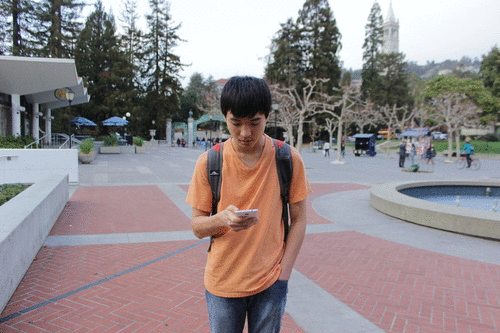
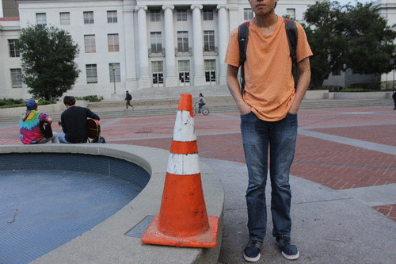
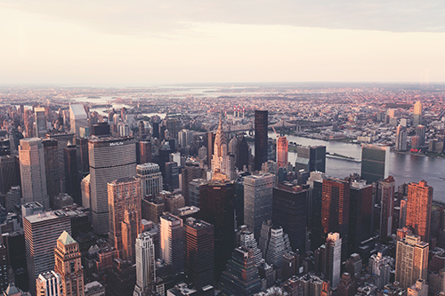
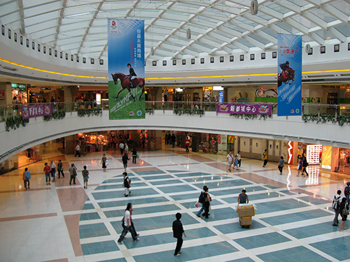

Final Project
David Liu and Simon Wu
Part 1: Vertigo
Overview
- To create shots with the vertigo effect we modified our distance to subject and zoom.
- We started far and zoomed in and ended up close and zoomed out
- this kept the subject in focus + looking static while the background changes
Cone
Simon
Bells and Whistles: animated GIFs


Bells and Whistles: Moving Subject and Camera
we first tried moving the subject instead of the camera. while simon moved further from the camera the camera only zoomed to keep him in the same place. The effect was similar to the vertigo effect, with the background changing

We also tried filming two subjects: simon and the cone. The camera moved back, the cone stayed in place, and simon moved away from the camera.

Part 2: Fake Miniatures
Overview
- we manually determined a focus line through the image
- we altered the "depth of field" of the image by blurring around the focus plane
- Points further from the focus line were blurred more. This was done by applying a gaussian blur with a low sigma (0.5) iteratively and expanding the region around the focus line that gets affected by the blur.
- we defined the size of the fake depth of field by how big the region around the focus line getting blurred should be (we set a threshold and expanded it each iteration
Skyscrapers
From internet

Mall
From internet

Bridge
From internet
Bridge
From internet
Bells and Whistles: Complex DOF Regions